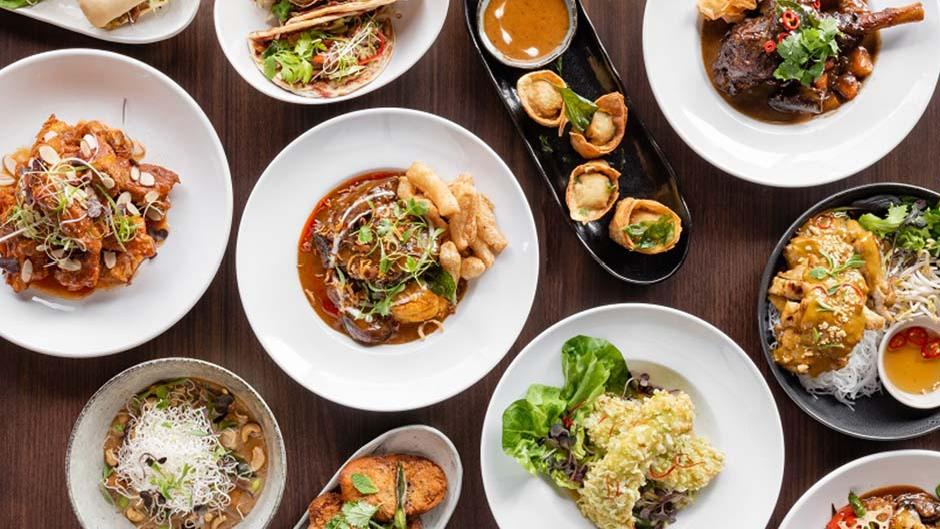

Welcome, culinary lovers!

Resep: 120+
Aneka Masakan
Aneka Masakan

Destinasi: 30+
Wisata Kuliner
Wisata Kuliner

Tips: 50+
Memasak & Hidangan
Memasak & Hidangan
Rating: 4.9/5
Dari 1,000+ Pengguna
Dari 1,000+ Pengguna

Nasi Goreng
Temukan cara membuat nasi goreng dengan bumbu autentik Nusantara. Mudah dan lezat untuk dinikmati kapan saja.
Lihat Resep
Sate Ayam
Kelezatan sate ayam khas Jawa dengan bumbu kacang yang kental. Cocok untuk acara keluarga atau makan malam spesial.
Coba Sekarang
Es Cendol
Minuman manis dengan cendol hijau yang segar. Pas untuk menemani siang yang panas.
Pelajari Resep